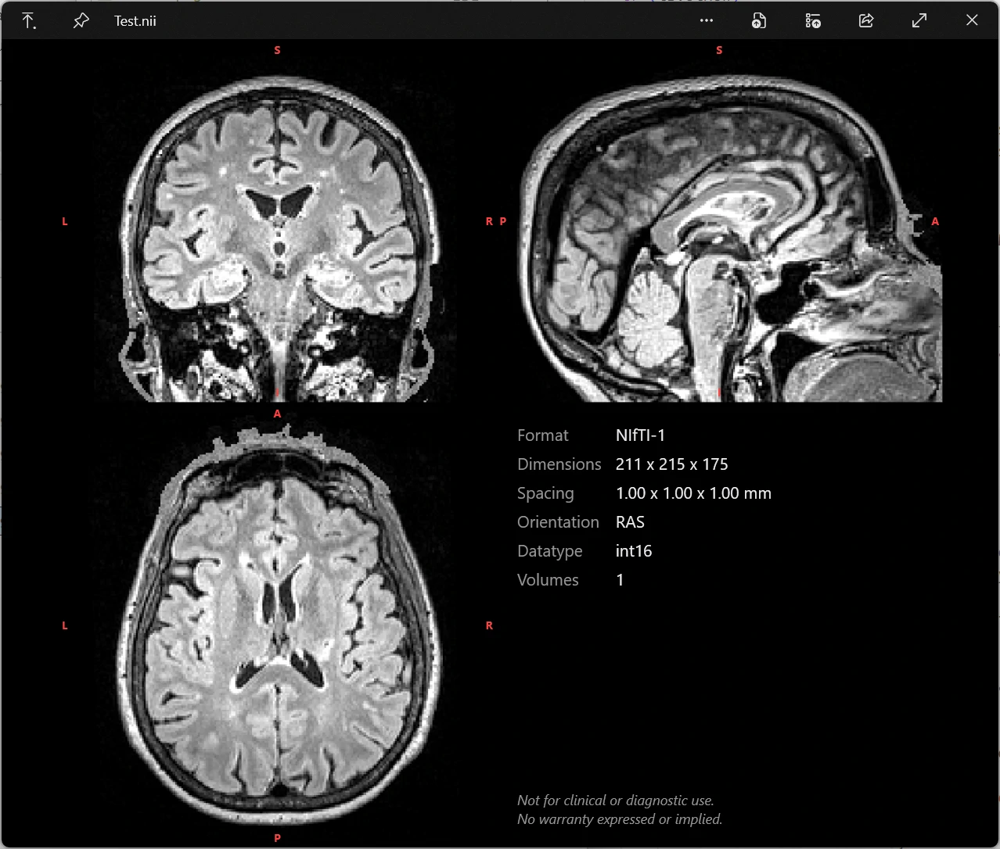

MIQ-Win is a lightweight plugin for QuickLook that previews medical volume images on Windows. Press Space on a supported file in Windows Explorer to instantly get an interactive orthogonal slice view alongside a metadata panel. No app to open, no waiting.
Requires QuickLook 4.5+ · Windows 10 & 11 · No admin rights needed

A convenience tool for quickly inspecting medical image files from Explorer. It prioritizes speed and ease of use over advanced visualization, and is not meant to replace dedicated medical image viewers.
Native QuickLook integration. Select a file in Explorer, hit Space, and the orthogonal slices appear instantly.
Coronal, sagittal and axial slices in one grid, with a metadata panel alongside.
Uncompressed files load instantly. Gzip-compressed files use native libdeflate to speed up decompression.
Rides on QuickLook's spacebar preview. No file associations, no Explorer fiddling; compound names like .nii.gz just work.
Tune intensity scaling, reorientation, colors, the metadata panel and more in a plain-text MIQ.settings.ini.
Shows data as stored on disk by default, so you see the raw orientation. Optional reorientiation to neurological and radiological views.
Most file formats are supported uncompressed and gzip-compressed. NRRD support covers self-contained .nrrd files (raw and gzip encodings).
.nii .nii.gz.mgh .mgz .mgh.gz.mif .mif.gz.nrrdMIQ-Win only supports volume files in research formats, DICOM is currently not supported.
The plugin relies on the file extension to determine the format, so it's important that files have the correct extension.
QuickLook.Plugin.MIQ.qlplugin)..qlplugin file, then click “click here to install this plugin”.MIQ.settings.ini to tune intensity scaling, colors and the metadata panel. Changes apply on the next preview.MIQ.settings.ini before quitting.QuickLook.Plugin.MIQ folder from QuickLook's plugin directory. This does not remove your settings, which live in QuickLook's data folder.No admin rights required. QuickLook has no in-app plugin manager; a plugin is simply a folder.
MIQ-Win is the Windows counterpart to MIQ, the original macOS Quick Look extension. It reimplements the same parser and slice renderer, so previews look and feel the same across platforms.
The original: a native Quick Look extension that previews the same NIfTI, FreeSurfer, MRtrix and NRRD volumes right from Finder.